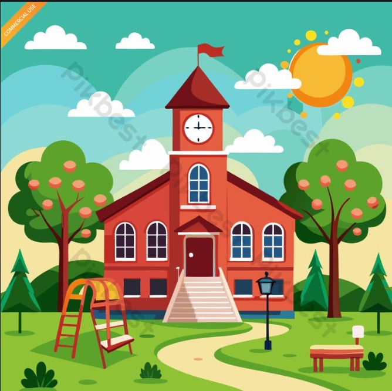

lahir pada tahun dimana banyak terjadi perubahan besar kebijakan, banyak orang melakukan demonstrasi untuk menggulingkan kekuasaan rezim, pada awal revolusi indonesia. Pertahanan untuk menjadi lebih baik sudah menjadi nama tengah dari penulis. Maka dengan itupun penulis mencoba untuk mempelajari Pemrograman Web di jurusan PJJ Informatika Unsia.
berikut adalah timeline masa sekolah sampai bekerja dari sang penulis

| Tahun | Pendidikan/Pekerjaan |
|---|---|
| 1997 | Lahir |
| 2003 sd 2009 | SD Negeri di Jawa Tengah |
| 2009 sd 2012 | SMP di Jawa Tengah |
| 2012 sd 2015 | SMK di Jawa Tengah |
| 2015 sd 2016 | Kuliah Kedinasan 1 Tahun |
| 2017 sd 2021 | Bekerja di Pemerintahan |
| 2026 sd Sekarang | Kuliah di Universitas Siber Asia |

Setelah menyelesaikan kuliah kedinasan, penulis bekerja di pemerintahan selama 9 tahun sampai sekarang. Pandemi covid-19 yang melanda dunia menuntut penulis untuk menguasai skill lainnya untuk bersiap dengan kondisi global yang tidak stabil, penulis memutuskan untuk bekerja dan melanjutkan pendidikan ke jenjang yang lebih tinggi.
Penulis memiliki beberapa hobi, diantaranya adalah sebagai berikut :
| Hobi | Deskripsi |
|---|---|
| Memasak | Penulis suka memasak, terutama masakan khas Indonesia. Penulis sering mencoba resep baru dan bereksperimen dengan bahan-bahan yang berbeda untuk menciptakan rasa yang unik. |
| Traveling | Penulis suka traveling, terutama ke tempat-tempat yang memiliki keindahan alam yang luar biasa. Penulis sering mencari destinasi wisata yang belum banyak diketahui orang untuk mengeksplorasi keindahan alam Indonesia. |
| Fotografi | Penulis suka fotografi, terutama fotografi alam. Penulis sering membawa kamera untuk mengabadikan momen-momen indah di alam, seperti matahari terbit, matahari terbenam, dan pemandangan alam yang menakjubkan. |